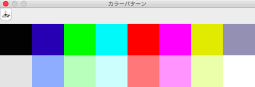

カラーパターンウィンドウ
このウィンドウは本ツールで前面に来ている主ウィンドウで編集している画像の「カラーパターンの管理」を行います。

カラーパターンは画像の一部（または全体）をパターンとして登録し、色選択の代わりとして描画に用いることができます。
機能の振る舞いとしては、スタンプに近いものと捉えてください（使い勝手は似て非なるところがあります）。
カラーパターンはドキュメントごとに持ち、登録数は１６個です。
カラーパターンの登録
主ウィンドウで選択範囲を作り、パターンを登録したい枠（番号）を選んで ボタンをクリックします。
ボタンをクリックします。
なお、選択範囲を任意領域で作成しても、パターン登録時はその領域の外接長方形で囲む範囲を登録します。